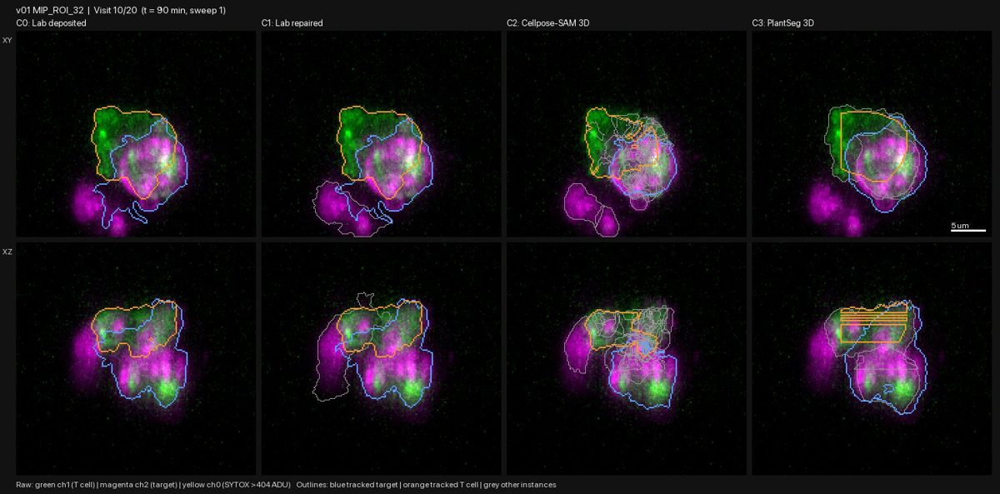
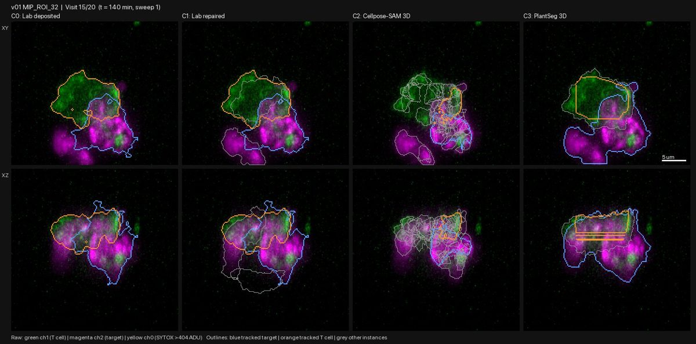
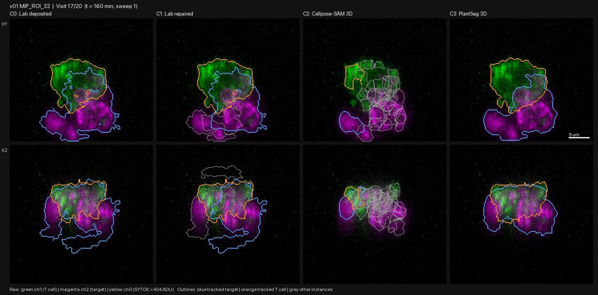

Re-segmentation pilot P1: four candidates on v01 ROI 32
| ID | 2026-10-28-09-re-segmentation-pilot-p1-four-candidates-on-v01-r | Date | 2026-10-28 |
|---|---|---|---|
| Gate | G1 | Status | reviewed |
| Author | claude | Reviewers | claude |
| Signoff | — | Commits | 19e8f5b |
| Datasets | raw_volumes, lab_masks | Protocols | gallery-review@v1 |
| Galleries | — | Supersedes / By | — / — |
Question
Can we get better cell outlines than the lab's masks by re-segmenting the raw images? Four candidates were compared on one killed chamber (v01 ROI 32, sweep 1 of all 20 visits):
- C0: the lab's masks as deposited.
- C1: the lab's masks repaired (holes filled, touching targets split).
- C2: Cellpose-SAM 3D, a general AI cell-outlining model, used as is (zero-shot).
- C3: PlantSeg 3D, a membrane-boundary network plus watershed.
What was run
src/seg/candidates.py in conda env seg (torch MPS, cellpose 4.2.1, plantseg 2.0rc14),
run by agy (Argon High); report .agy_pilot1_report.md. Outputs:
data/pilot_seg/ (masks, metrics CSV, timing), figures/pilot/v01_MIP_ROI_32_candidates.mp4
and figures/pilot/frames/.
Time per 3D image (Apple MPS): C0 0.6 s, C1 2.4 s, C2 119 s, C3 10 s.
What was looked at
All 20 visit frames (top and side views, 4 candidates side by side), reviewed by Claude. In every frame: blue = tracked target, orange = tracked T cell, grey = other objects.
Observations
- C2 Cellpose-SAM fails in all 20 visits. Every cell is shattered into 9-21 pieces. The tumour label marks only the cell membrane, so the model sees hollow shells. It is also the slowest (2 minutes per image). Not usable without changes.
- C3 PlantSeg fails.
- In visits 7 and 9-12, plus 15, the T cell outline is a striped rectangle, a code bug.
- In about 11 of 20 visits the blue target covers both tumour cells in the top view.
- The agy report said C3 splits the two targets in 17/20 visits. Its CSV counts two target objects, but the frames show the tracked one covering both cells. The images win.
- C1 lab repaired is the best of the four, but not clean.
- It separates the contacted target from its neighbour in the top view in nearly every visit.
- It still keeps parts of the mask that have no cell signal under them. These show as outlines above or below the cells in the side view, in most visits.
- Usually these signal-free parts are grey "other" objects, but in visits 1, 16 and 17 they are attached to the blue target and would inflate its volume.
- C0 confirms the earlier gallery finding: the two touching targets are merged in most visits.



Decision
- No candidate passes. C1 is the base for the next round.
- Pilot P2:
- Add a raw-signal check to C1: drop mask parts with no signal under them.
- Score every candidate by agreement with the raw image: the share of mask voxels that have signal, and the share of signal covered by the mask. This is also the basis for clean rule v2.
- Fix the C3 rectangle bug and keep it only if it beats C1.
- Drop zero-shot C2.
- Run on all 8 pilot chambers, with a comparison movie for each.
- Lesson: agy's metric claims disagreed with its own frames. Candidate verdicts come from the frames, not the CSV.
Open issues
- Cellpose-SAM might work on a filled input (membrane image filled in, or the T-cell and tumour channels combined). Revisit only if C1 with the raw-signal check falls short.